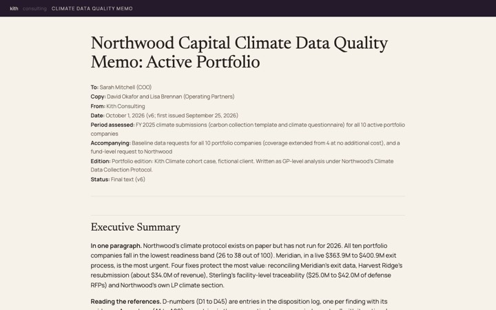
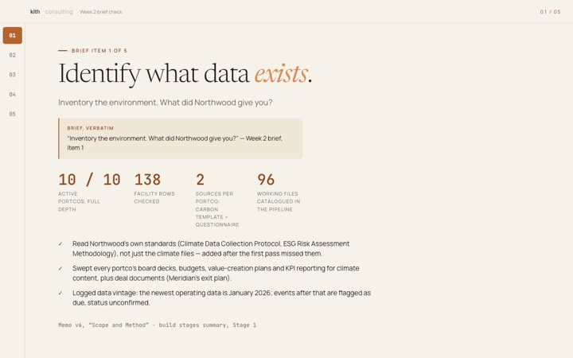

Week 2 of 6, Kith Climate cohort
Data audit
Is Northwood's climate data good enough to disclose to LPs and to survive a buyer's diligence, and what must be fixed first?
Highlights

Climate data review deck
Ranks four issues by value at stake and shows every company's readiness score on one page.
Open
Climate data quality memo
The full argument, with each finding labelled Confirmed, Reported or Inferred and an owner for each fix.
Open
Brief check: actions taken
Walks the five brief items against what was done, so a reader can see nothing was skipped.
OpenThe case
Northwood's climate protocol exists on paper but has not run for 2026. I audited the data of all ten companies, not just the priority four, and scored each for readiness.
For LP disclosure, FY 2025 is achievable once known errors are fixed. For buyer diligence, no company passes today: all ten score 26 to 38 out of 100. The ranking is by value at stake. Meridian's exit data, Harvest Ridge's resubmission, Sterling's site-level data for defense bids and the LP climate section come first.
All deliverables
Each opens in a new tab, in the Kith Consulting style it was delivered in.
- Climate data review deck (12 pages)The presentation to Sarah: headline, value-ranked issues, readiness scores, decisions needed and how it was built.
- Climate data quality memoThe written audit of all ten companies, with the value ranking and the readiness method.
- Brief check: actions takenA page tracing each item of the Week 2 brief to what was done.
Data and method
The method notes, data and re-run steps that let the client reproduce the work without us.
- Data quality memo (Markdown)MarkdownThe memo source text, for reuse and diffing.
- Data request: ClearviewMarkdownThe baseline data Kith needs from this company, with tiers set by what blocks the Week 3 baseline.
- Data request: Harvest RidgeMarkdownThe baseline data Kith needs from this company, with tiers set by what blocks the Week 3 baseline.
- Data request: KeystoneMarkdownThe baseline data Kith needs from this company, with tiers set by what blocks the Week 3 baseline.
- Data request: MeridianMarkdownThe baseline data Kith needs from this company, with tiers set by what blocks the Week 3 baseline.
- Data request: NovacareMarkdownThe baseline data Kith needs from this company, with tiers set by what blocks the Week 3 baseline.
Show all 14
- Data request: PatriotMarkdownThe baseline data Kith needs from this company, with tiers set by what blocks the Week 3 baseline.
- Data request: PinnacleMarkdownThe baseline data Kith needs from this company, with tiers set by what blocks the Week 3 baseline.
- Data request: RidgelineMarkdownThe baseline data Kith needs from this company, with tiers set by what blocks the Week 3 baseline.
- Data request: SterlingMarkdownThe baseline data Kith needs from this company, with tiers set by what blocks the Week 3 baseline.
- Data request: TridentMarkdownThe baseline data Kith needs from this company, with tiers set by what blocks the Week 3 baseline.
- Fund-level data requestMarkdownThe items only Northwood can answer, plus the plan for issuing the company requests.
- Presentation scriptMarkdownThe talking notes for walking Sarah through the deck.
- Cover email to SarahMarkdownThe email that accompanied the memo and deck.
How it was built
- The work ran through scripts, not manual re-entry: raw files, then checks, then the memo figures. The scripts use only the Python standard library, so Northwood can re-run them.
- A verification script re-runs the pipeline and tests the memo's figures against fresh outputs. At the last recorded run 133 of 136 checks passed; the 3 fails were deck citations to an older memo version, declared as known.
- All ten questionnaires were extracted twice and compared: 151 shared figures, 0 mismatches.
- Read-only review agents challenged the draft memo. Later, opening five files nobody had read changed the exit date and settled a name ambiguity.
- Limits are stated. I set the readiness weights and materiality thresholds after the first findings were known, so they are held fixed until responses arrive.
My part
- I approved the audit at the method's final, consultant sign-off stage, after the reviewers' fixes were in.
- I accepted the priority call: rank issues by value at stake, not by data urgency.
- I stopped client-facing edits made without my approval and had the open item run through a decision-review process before going further.
The AI's part
- Claude Code wrote the pipeline scripts, the logs of findings and assumptions, and drafted the memo, deck and eleven data requests.
- Review agents (assurance, client-voice, deck-quality, process) read the drafts and raised the fixes I decided on.
Across the engagement
From Week 1. The proposal priced four priority companies and promised a data audit. The audit covered all ten, with the priority four marked.
Into Week 3. The Week 3 inventory ran on the same ten companies and 138 facility rows. Where data was late it used the stated provisional rule from this week.